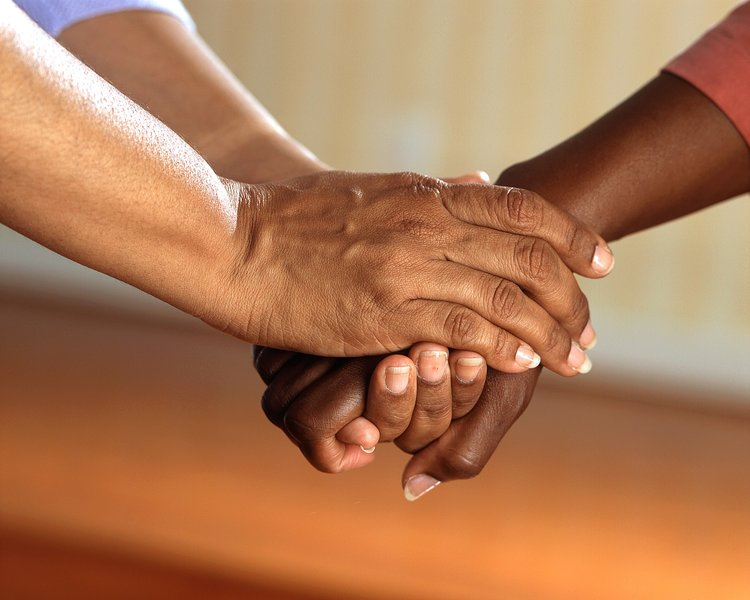
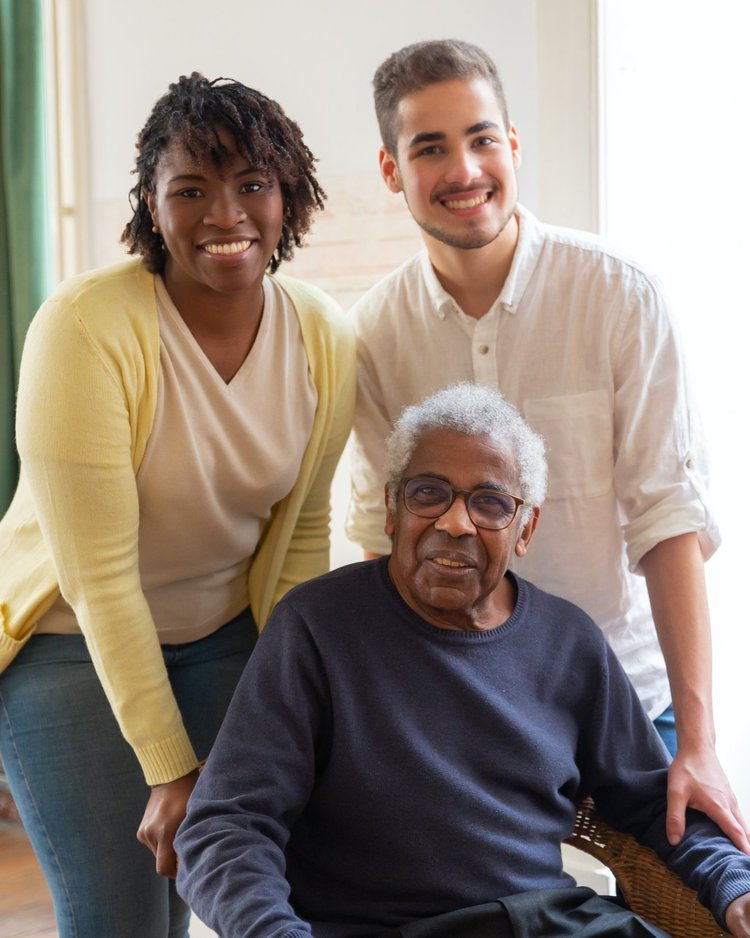

Who we are
Be The Good was established in 2023. This charity has been operating under its former name, For the Love, since 2017. Be the Good will continue to support underprivileged students and families, as well as nursing home residents and other community members who are often unseen and unheard.
How you can help

"Never doubt that one person can make a difference."
- Ingrid Newark
Donate
Please visit our Projects page to learn about our current efforts. You can also donate materials for those projects or give money directly via our linked PayPal or Venmo accounts. Thank you for your interest!
Volunteer
We don't have a warehouse where volunteers are continuously needed, but there are often other opportunities for you to get involved. If you are interested in helping with special projects, like sorting donations after big events, delivering holiday banners to nursing homes, or wrapping Christmas presents, please reach out!
Start your own drive or collection project
Choose one of our projects and run with it! Involve your family, your neighbors, your co-workers, or your church community. Uniting for an important cause builds relationships and increases donations!